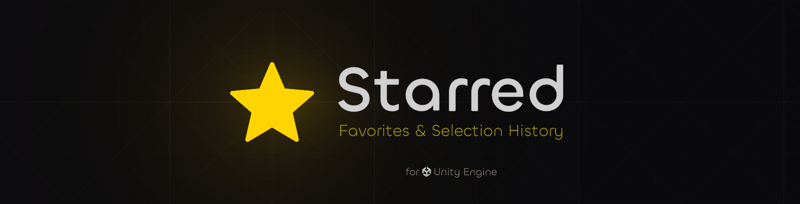
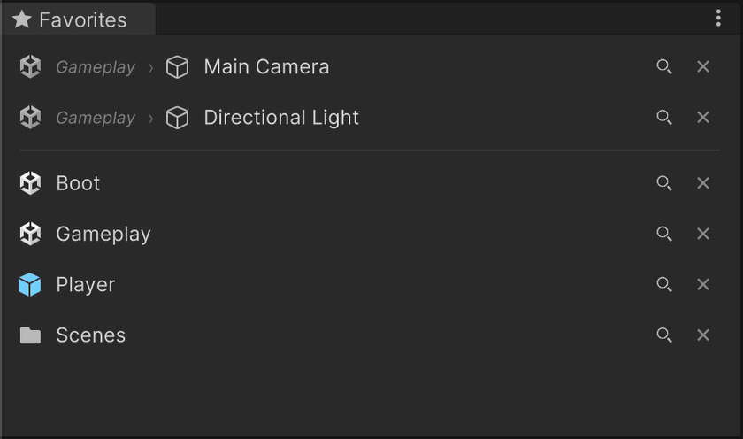
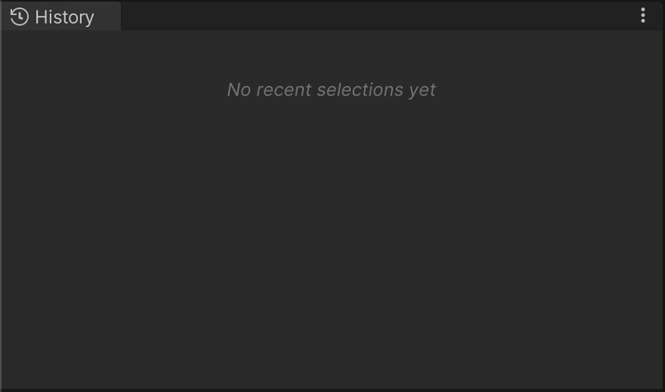
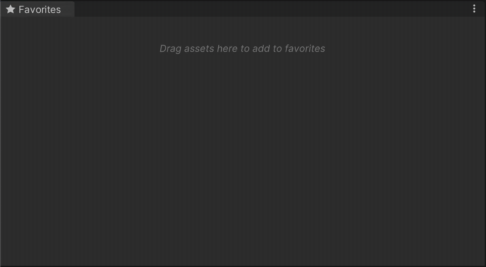
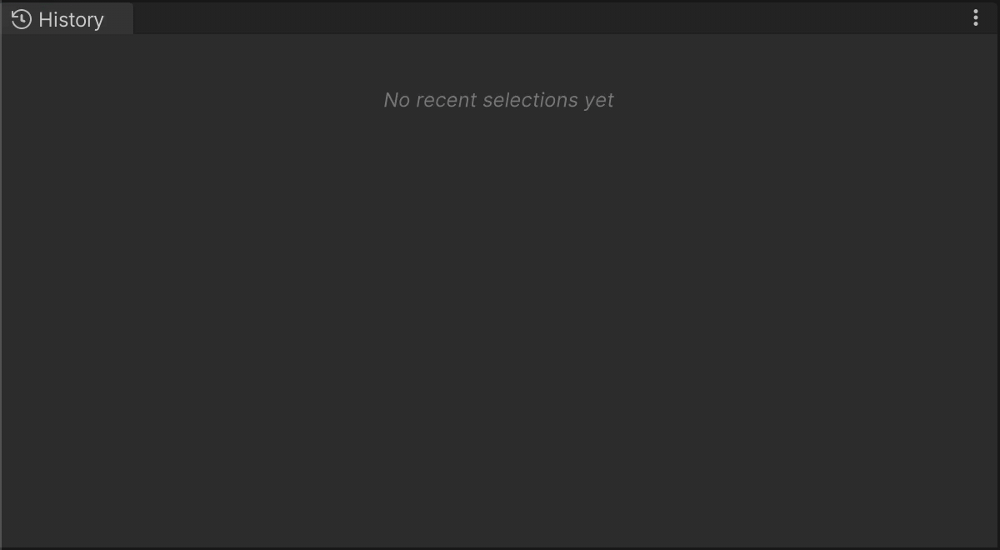
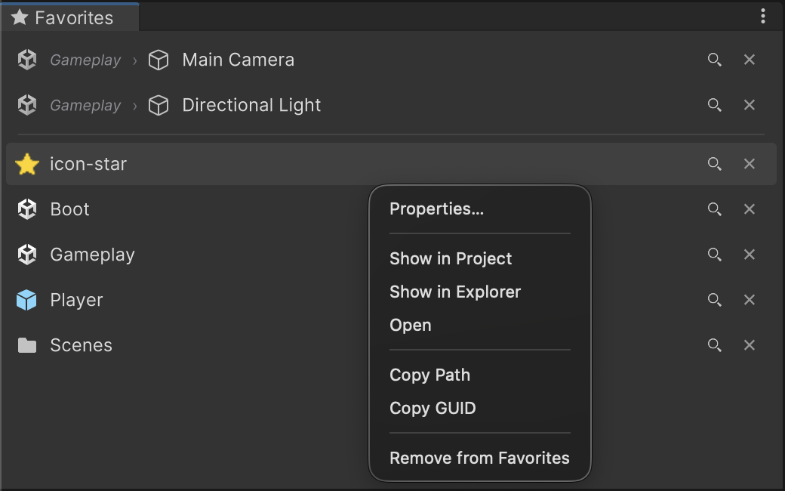
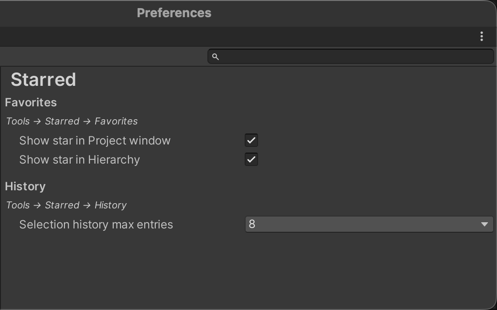

Star assets and scene objects you use often. Jump back to recent selections. See what's starred in the Project window and Hierarchy.




Star assets and scene objects you use often. Jump back to recent selections. See what's starred in the Project window and Hierarchy.


Favorites
Drop in project assets or scene GameObjects. Click to select, double click to open or frame, drag out onto Inspector fields.

Selection History
Filled automatically, newest first. Selecting an item again moves it to the top. Each row has a ★ button to promote straight to Favorites.

Star Overlays
Favorited items get a ★ overlay in the Project and Hierarchy windows. Click the overlay to unfavorite directly. Both toggle independently in Preferences.
Context Menu

Preferences
macOS: Unity → Settings → Starred · Windows: Edit → Preferences → Starred

Install
Requires Unity 2022.3 LTS or newer. Editor only. No runtime footprint, no dependencies.
Package Manager
Advantage: updates. OpenUPM publishes versions to a registry, so Package Manager can show new releases and version history. A git URL install stays pinned until you change the URL.
Via openupm-cli:
openupm add com.kynesis.starred
Or add the OpenUPM scoped registry, then install com.kynesis.starred from Package Manager:
| Name | package.openupm.com |
|---|---|
| URL | https://package.openupm.com |
| Scope | com.kynesis |
Package page: com.kynesis.starred
https://github.com/landosilva/starred.git
Pin to a release:
https://github.com/landosilva/starred.git#v0.2.0
Does not show Package Manager updates. Prefer OpenUPM if you want that.
Data
Nothing Starred writes lives in Assets/. Everything is per user.
UserSettings/FavoriteAssets.jsonUserSettings/SelectionHistory.jsonEditorPrefs